Primera Temporada
- Episodio 1: Tourist Trapped (Turista atrapado)
- Episodio 2: The Legend of the Gobblewonker (La leyenda del Gobblewonker)
- Episodio 3: Headhunters (Cazadores de cabezas)
- Episodio 4: The Hand That Rocks the Mabel (La mano que mece a Mabel)
- Episodio 5: The Inconveniencing (La tienda enbrujada)
- Episodio 6: Dipper vs. Manliness (Dipper vs. la hombría)
- Episodio 7: Double Dipper (Doble Dipper)
- Episodio 8: Irrational Treasure (Tesoro irracional)
- Episodio 9: The Time Traveler's Pig (El cerdito del viajero del tiempo)
- Episodio 10: Fight Fighters (Pelea de luchadores)
- Episodio 11: Little Dipper (El Pequeño Dipper)
- Episodio 12: Summerween (Súper Halloween)
- Episodio 13: Boss Mabel (La jefa Mabel)
- Episodio 14: Bottomless Pit! (¡Pozo sin fondo!)
- Episodio 15: The Deep End (Un profundo final)
- Episodio 16: Carpet Diem (Aprovecha la alfombra)
- Episodio 17:Boyz Crazy (Chicoz locoz)
- Episodio 18: Land Before Swine (El cerdito o la vida)
- Episodio 19: Dreamscapers (Fuga de ensueño)
- Episodio 20: Gideon Rises (Gideon asciende)
Dipper y Mabel conocen la Cabaña del Misterio y los secretos del Diario 3.
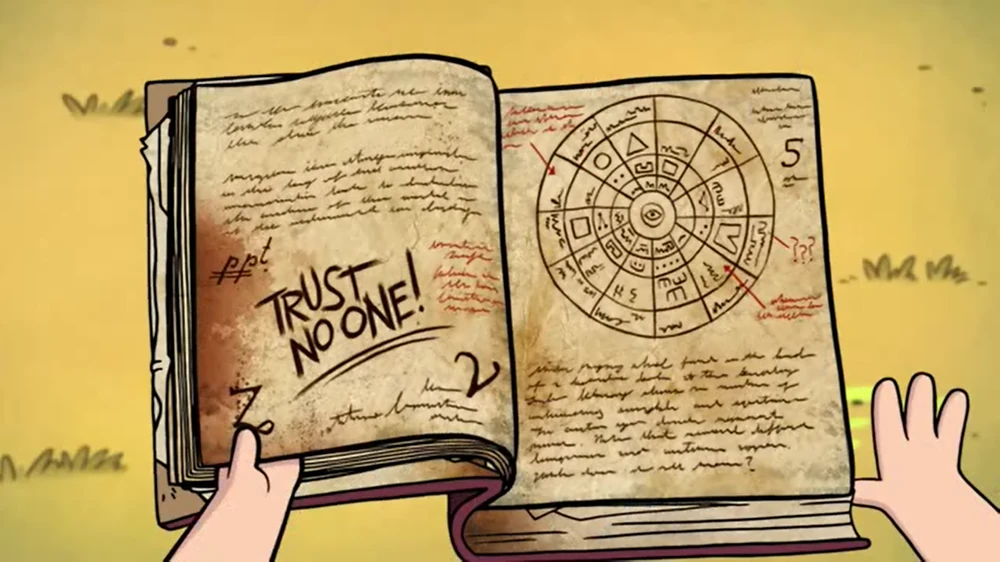Dipper, Mabel y su tío Stan van al lago para un día de pesca familiar. Sin embargo, los planes cambian cuando el excéntrico Viejo McGucket afirma haber visto una enorme y extraña criatura en el lago: el Gobblewonker

Los gemelos descubren un misterio peculiar cuando encuentran a su tío Stan realizando la gran inauguración de su nueva atracción en la Cabaña del Misterio: una colección de figuras de cera de personajes famosos.

Dipper y Mabel se encuentran con un nuevo y peculiar personaje: Gideon Alegría, un niño médium famoso por sus espectáculos psíquicos que se enamora perdidamente de Mabel e intentará llamar su atencion, por las buenas o por las malas...
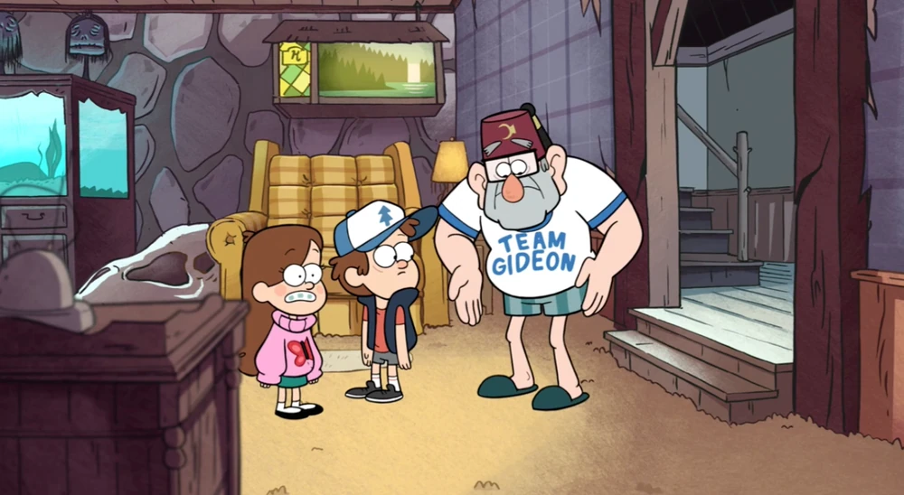
Dipper y Mabel se unen a Wendy y su grupo de amigos en una aventura nocturna que los lleva a una tienda abandonada en Gravity Falls. Dipper, tratando de impresionar a Wendy, intenta actuar con madurez y ocultar su verdadera edad.
Dipper se siente inseguro sobre su masculinidad después de que Mabel y el tío Stan se burlan de él por sus gustos musicales y su personalidad sensible. Determinado a demostrar su hombría, Dipper escucha un extraño rugido en el bosque y decide investigar, encontrándose con una tribu de hombres salvajes y muy masculinos conocidos como los Hombres Toro.

El tío Stan organiza una fiesta en la Cabaña del Misterio para atraer turistas y ganar dinero. Dipper ve en esta celebración la oportunidad perfecta para acercarse a Wendy, de quien está enamorado. Así que decide crear un plan detallado para lograrlo con ayuda de una fotocopiadora magica que puede crear clones de él mismo
Dipper y Mabel descubren que el fundador de Gravity Falls, Nathaniel Noroeste, podría ser un fraude. Esto ocurre durante el Día del Pionero, una celebración anual en el pueblo.
Durante una feria en Gravity Falls, los gemelos ganan un adorable cerdito llamado Pato, al que Mabel adopta como mascota. Pero las cosas se complican cuando Dipper quiere usar una mini-máquina del tiempo que encontró para llamar la atencion de Wendy.
Dipper se enfrenta a Robbie, el novio de Wendy, después de que este lo desafía a una pelea. Dipper, temeroso de perder, usa un código secreto en un videojuego de arcade llamado “Fight Fighters” para traer a la vida a su personaje favorito, Rumble McSkirmish, con la esperanza de que lo defienda
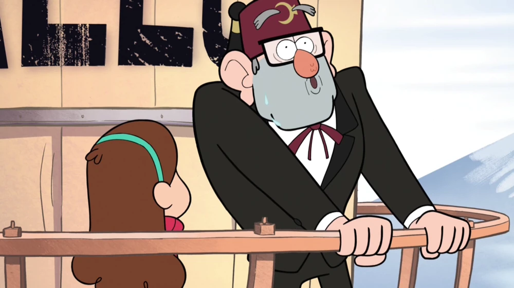Dipper se siente acomplejado al descubrir que Mabel es más alta que él por un milímetro. Decidido a igualar su altura, Dipper encuentra un cristal mágico en el bosque que puede alterar el tamaño de las cosas.
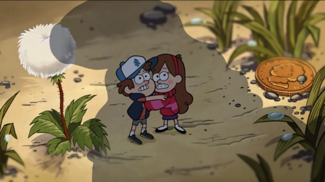Dipper y Mabel están emocionados por celebrar una versión especial de Halloween que se celebra en verano en Gravity Falls. Sin embargo, las cosas se complican cuando un monstruo conocido como el Bromista del Súper Halloween aparece y les da un ultimátum: deben recolectar 500 dulces antes de que se apaguen todas las linternas de sandía (en lugar de calabazas) en el pueblo, o él los comerá
Mabel cuestiona la manera en que su tío Stan maneja la Cabaña del Misterio. Stan, molesto por las críticas, la desafía a una apuesta: quien gane más dinero en tres días podrá darle una prenda sorpresa al otro.
Dipper, Mabel, Stan y Soos caen accidentalmente en un pozo sin fondo cerca de la Cabaña del Misterio. Mientras caen, deciden contar tres historias para pasar el tiempo: "El locutor", "La historia del pinball de Soos" y "La dentadura de la verdad".
Dipper, Mabel y sus amigos deciden pasar un día en la piscina pública de Gravity Falls. Mientras están allí, Mabel se enamora de un muchacho llamado Mermando, quien resulta ser un tritón atrapado en la piscina.
Dipper y Mabel descubren una habitación secreta en la Cabaña del Misterio y ambos quieren quedársela. Stan decide que quien más lo adule obtendrá la habitación. Mientras compiten, los gemelos descubren que la alfombra de la habitación tiene propiedades mágicas que permiten intercambiar cuerpos al generar electricidad estática.
Mabel y sus amigas Candy y Grenda descubren que su boy-band favorita, “Sev’ral Timez”, en realidad está compuesta por clones prisioneros.
Mabel deja a su cerdito Pato al cuidado de Stan mientras ella sale a hacer unas compras. Sin embargo, Stan, cansado de Pato, lo deja afuera, y un pterodáctilo lo secuestra. Dipper, Mabel, Stan y Soos se embarcan en una misión para rescatar al cerdito, siguiendo el rastro del pterodáctilo hasta una caverna llena de dinosaurios momificados en savia.
Gideon contrata a un demonio llamado Bill Cipher para entrar en la mente de Stan y robar la combinación de la caja fuerte de la Cabaña del Misterio. Dipper, Mabel y Soos se enteran del plan de Gideon y deciden entrar en la mente de Stan para detener a Bill y proteger la combinación. Dentro de la mente de Stan, enfrentan varios desafíos y recuerdos, descubriendo aspectos desconocidos de su tío.
Gideon logra apoderarse de la Cabaña del Misterio, obligando a Dipper, Mabel y Stan a mudarse con Soos y su abuela. Con su verano en Gravity Falls en peligro de terminar, Dipper y Mabel deciden enfrentarse a Gideon para recuperar su hogar.
Segunda Temporada
- Episodio 21: Scary-oke (Susto-oke)
- Episodio 22: Into the Bunker (Visita al refugio)
- Episodio 23: The Golf War (La guerra del mini-golf)
- Episodio 24: Sock Opera (El teatro de los calcetines)
- Episodio 25: Soos and the Real Girl (Soos y la chica de verdad)
- Episodio 26: Little Gift Shop of Horrors (La tiendita de los horrores)
- Episodio 27: Society of the Blind Eye (La sociedad del ojo cegado)
- Episodio 28: Blendin’s Game (El juego de Blendin)
- Episodio 29: The Love God (Cupido)
- Episodio 30: Northwest Mansion Mystery (El misterio de la mansión Noroeste)
- Episodio 31: Not What He Seems (No es lo que parece)
- Episodio 32: A Tale of Two Stans (La historia de los dos Stan)
- Episodio 33: Dungeons, Dungeons, and More Dungeons (Calabozos, calabozos y más calabozos)
- Episodio 34: The Stanchurian Candidate (El candidato)
- Episodio 35: The Last Mabelcorn (El último Mabelcornio)
- Episodio 36: Roadside Attraction (Atracciones de carretera)
- Episodio 37: Dipper and Mabel vs. the Future (Dipper y Mabel contra el futuro)
- Episodio 38: Weirdmageddon Part 1 Xpcveaoqfoxso (Raromagedón: Parte 1 Xpcveaoqfoxso)
- Episodio 39: Weirdmageddon 2 Escape from Reality (Raromagedón 2 Escape de la realidad)
- Episodio 40: Weirdmageddon 3 Take Back The Falls (Raromagedón 3 Recuperar el pueblo)
La familia Pines intenta volver a la normalidad después de los eventos con Gideon. Para celebrar, organizan una fiesta de re-inauguración de la Cabaña del Misterio con karaoke. Sin embargo, las cosas se complican cuando Dipper, en un intento de demostrar la existencia de lo sobrenatural a unos agentes del gobierno, accidentalmente revive a un grupo de zombis.
Dipper, Mabel, Soos y Wendy deciden investigar una pista sobre el autor de los diarios, que los lleva a un búnker oculto en el bosque.

Mabel y Pacifica compiten en un torneo de mini-golf para demostrar quién es mejor. La rivalidad entre ellas se intensifica cuando descubren que los hoyos de mini-golf están habitados por pequeñas criaturas llamadas Lilliputtians.
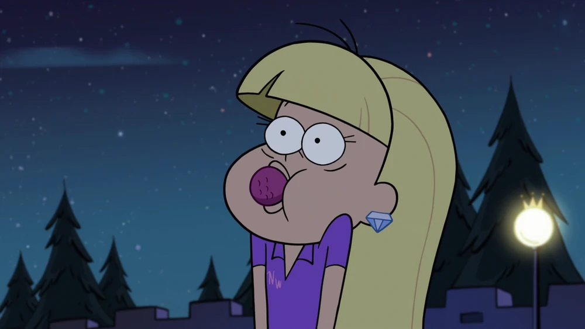Mabel decide organizar una ópera con títeres de calcetines para impresionar a un titiritero local llamado Gabe. Mientras tanto, Dipper intenta descifrar la contraseña de una laptop que contiene información crucial sobre los misterios de Gravity Falls

Soos necesita encontrar una pareja para la fiesta de compromiso de su primo Reggie. Desesperado por mejorar sus habilidades de coqueteo, Soos compra un videojuego de simulación de citas llamado “Academia del Romance 7”, donde conoce a un personaje virtual llamado .GIFfany, pero pronto se da cuenta de que ella es más realista de lo que parece.
Stan cuenta tres historias de terror a un cliente de la Cabaña del Misterio: "Manos Quietas", "Cerbiduría" y "Día de Arcilla"
Dipper, Mabel, Soos y Wendy descubren una sociedad secreta en Gravity Falls que se dedica a borrar los recuerdos de las personas sobre eventos sobrenaturales.

Dipper y Mabel descubren que Soos nunca celebra su cumpleaños. Deciden organizarle una fiesta sorpresa, pero accidentalmente invocan a Blendin Blandin, un viajero del tiempo que busca venganza por los eventos de episodios anteriores.
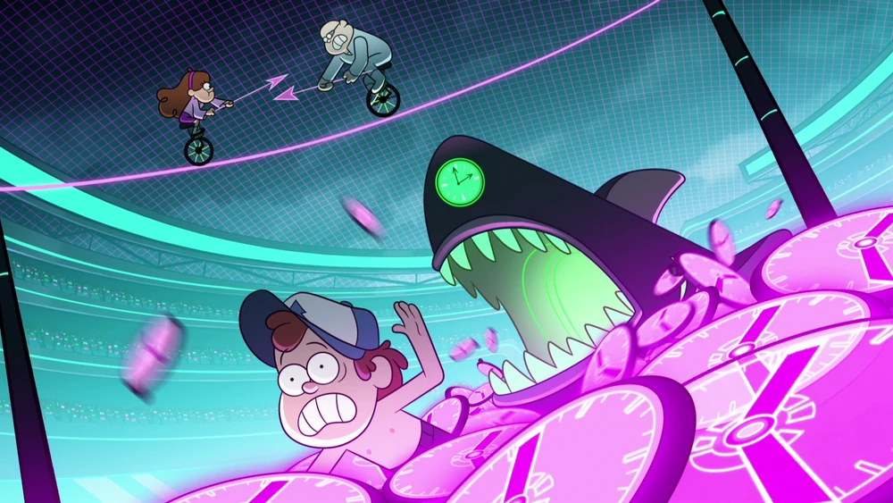Mabel decide hacer de casamentera y emparejar a Robbie con Tambry después de ver lo deprimido que está Robbie tras su ruptura con Wendy. Para lograrlo, roba una poción de amor de un verdadero dios del amor que está en el pueblo por un festival de música.

Pacifica Noroeste necesita la ayuda de Dipper porque la mansión de su familia está siendo acosada por un fantasma vengativo, en medio de la fiesta anual de la familia Noroeste.
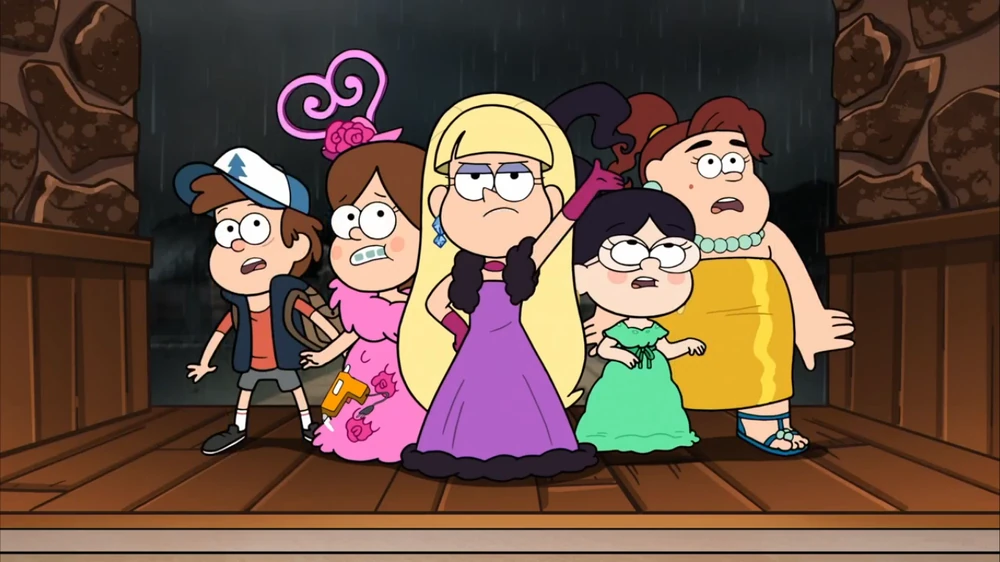
Los agentes del gobierno arrestan a Stan, lo que lleva a Dipper y Mabel a cuestionar cuánto saben realmente sobre su tío.
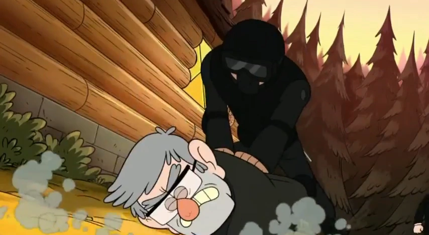Finalmente se nos revela quien es el autor de los diarios y Stan confiesa los secretos de su pasado a Dipper y Mabel
Dipper encuentra un juego de mesa llamado “Calabozos, calabozos y más calabozos” y se emociona por jugarlo. Sin embargo, no encuentra a nadie que quiera jugar con él hasta que Ford, el hermano de Stan, se une a la partida.

Stan decide postularse para alcalde de Gravity Falls después de que el actual alcalde fallece. Dipper y Mabel se convierten en sus asesores de campaña, pero pronto descubren que Stan no es el candidato ideal. Para ayudar, Ford les ofrece un dispositivo de control mental para ayudar a Stan a dar discursos más coherentes y persuasivos.
Mabel y sus amigas se embarcan en una misión para obtener un mechón de pelo de unicornio, necesario para proteger la Cabaña del Misterio de amenazas externas. Mientras tanto, Dipper y Ford trabajan juntos para descubrir más sobre los planes de Bill Cipher y cómo detenerlo.
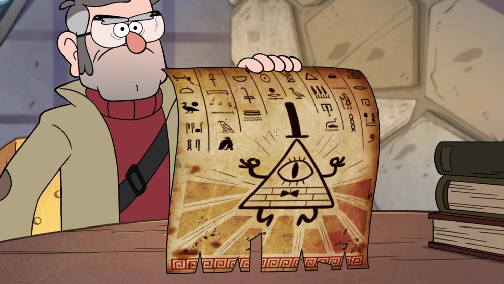Stan lleva a Dipper, Mabel, Soos, Candy y Grenda en un viaje por carretera para sabotear otras trampas turísticas en Oregón. Durante el viaje, Dipper intenta superar su enamoramiento por Wendy siguiendo los consejos de Stan sobre cómo hablar con chicas.
Dipper y Mabel se preparan para su 13º cumpleaños, que está a solo una semana de distancia. Mientras Mabel se emociona planeando la fiesta, Dipper se une a Ford en una misión para reparar una fisura dimensional que amenaza con desatar el caos en Gravity Falls.
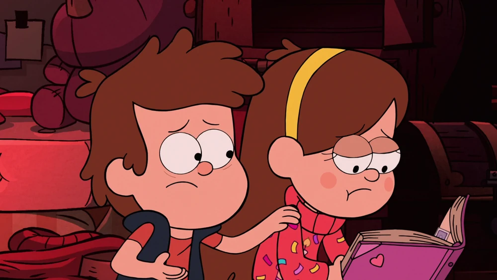Bill Cipher logra obtener una forma física y desata el caos en Gravity Falls, iniciando el apocalipsis conocido como “Weirdmageddon”. Dipper y Ford intentan detenerlo, pero Bill captura a Mabel y la encierra en una burbuja mágica.
Dipper, Soos y Wendy deben rescatar a Mabel, quien está atrapada en una burbuja mágica creada por Bill Cipher. Dentro de esta burbuja, Mabel ha creado un mundo de fantasía llamado “Mabelandia”, donde todo es perfecto según sus deseos.
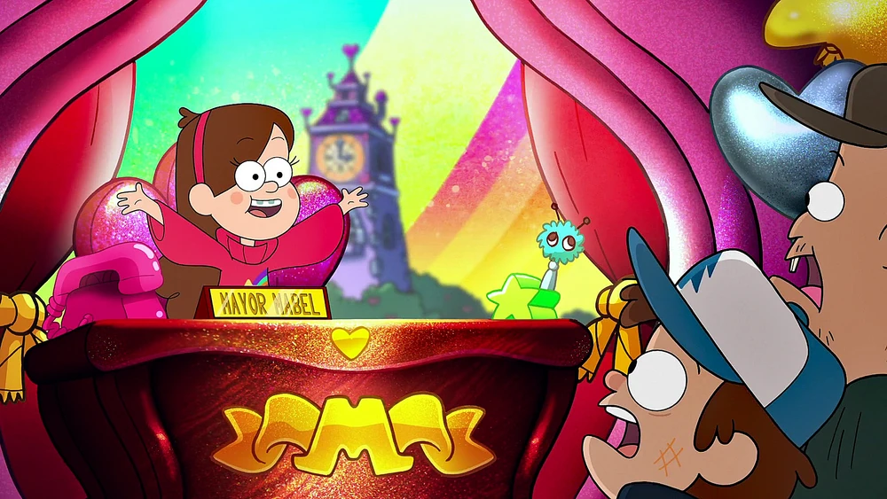Ford descubre los verdaderos planes de Bill Cipher, mientras el equipo de la Cabaña del Misterio elabora un plan para luchar y recuperar el pueblo. Dipper, Mabel, Soos y Wendy regresan a la Cabaña del Misterio y encuentran a Stan y a otros residentes refugiados allí.